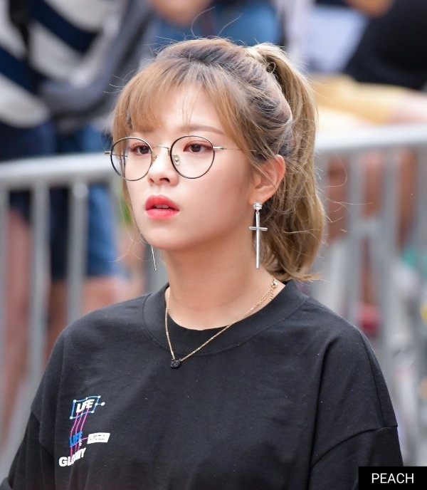

유정연은 JYP엔터테인먼트에서 2015년 10월 20일 데뷔한 9인조 그룹 TWICE의 멤버이다.
캐치프레이즈는 카리스마이며, 리드보컬과 예능, 걸크러시 캐릭터를 담당하고 있는 멤버. 상징 색깔은 연두색 (#c5d97a). 데뷔 초에 밀었던 카리스마(센 이미지)와는 달리 성격 자체는 장난기 많고(유장꾸), 겁도 많고, 눈물도 많고 여린 면도 많아보인다. 그래서 일각에서는 '정연이는 세고 보이시한 캐릭터가 아니라 그냥 숏컷이 잘 어울리는 거다.'라고 하기도. DTNA 활동부터 약 1년 간 긴 머리로 새로운 이미지를 보여주기도 했다.